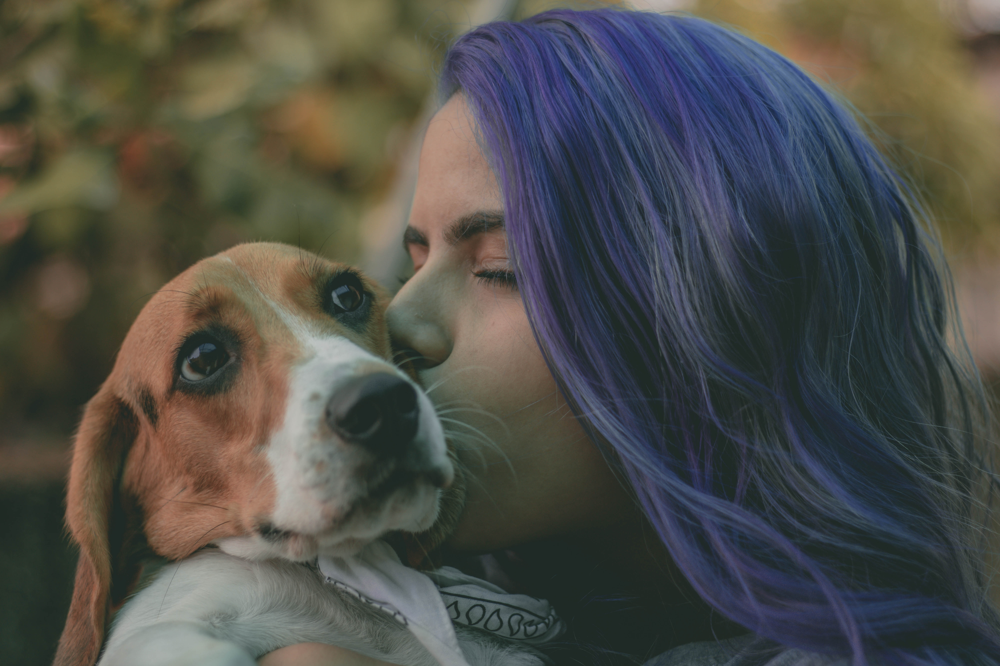

🔥 BE INSPIRED 🔥

Hi, I'm Sara and this is my dog Milo. About a year ago I decided to set out on an adventure. I didn't have a plan but I needed a way to come up with one...and fast. I knew I wanted to travel and check things off my bucket list, so I joined 30 Before 30! This app made planning out me and Milo's adventure so much easier. I was able to create my profile and make my list right away. The best part...getting inspiration from all my fellow 30 Before 30 friends!
With 30 Before 30 I was able to go skydiving, white water rafting, scuba diving, and of course visit amazing puppy parks for Milo. Now, I have a beautiful adventure story to share with all my friends and family. Thank you 30 Before 30 for making all of this possible!